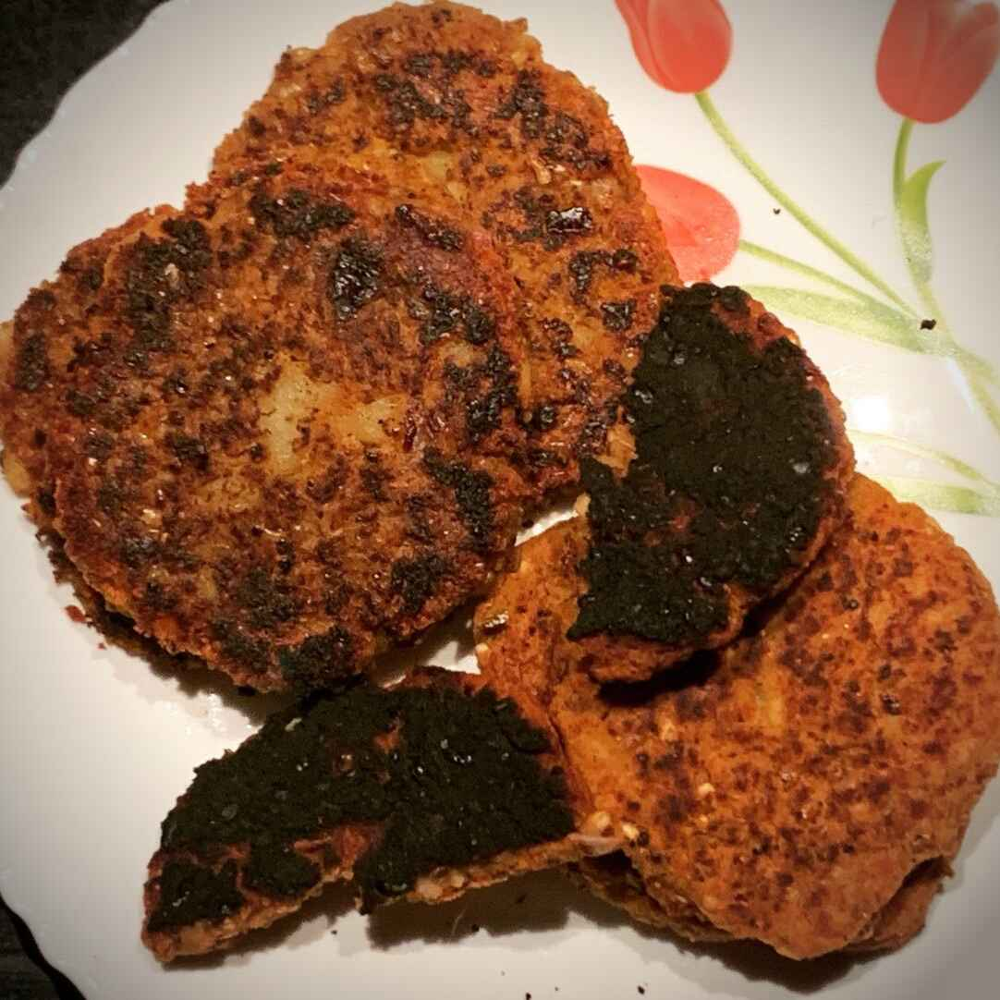
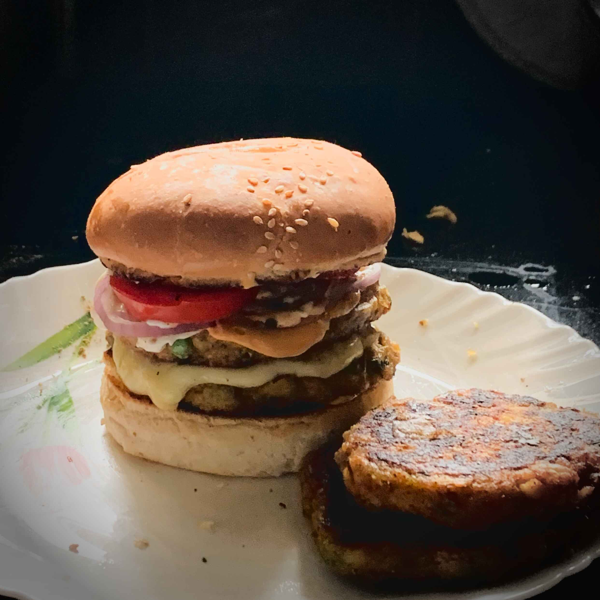

A delicate presentation of Star WadaTM on a white
plate
Prepare your tastebud for an exciting new flavour that was co-developed me in
collaboration with my sister. This delectible delicacy is not the the as easy as
cooking a pack of instant noodles, but it also isn't as hard as baking a cake. If
you've been in the kitchen for more than 15 minutes, you will know that the most
important ingredient in the kitchen is patience. And with that ethos, let's begin
the recipe.
- Patience
- Chickpeas
- Corn sttarch
- Spices (red chilli powder, mixed herbs, etc.)
- Lots of galric cloves, finesly chopped
- One Onion, finely chopped
Steps
- Soak the chickpeas in water for at least 6 hours
- Drain the chickpea water and rinse the chickpeas
- Boil the chickpeas, preferably in a pressure cooker, or any large pot until
the chickpeas can be easily squished between thine digits
- Get the whole load of chickpeas, roughly dry them using a towel, and mash them
with a masher, leaving a few chickpeas unmashed.
- Put on some frank ocean songs
- Add some chilli powder, salt, and spices to the chickpeas
- Add a cup of corn starch to the chickpeas
- Mix everything up using your hands
- Once everything is mixed, make several patties out of the chickpea
mixture
- Fyr the patties in a mildly piled pan on each side until dark brown
That's it, your chickpea patties, nay, your Star Wadas are done!
Slap some burger buns on that shit and add some lettuce and tomato, and you're
good to go.

An example of what could be acheived with the Star
WadaTM if you could only imagine.
Home